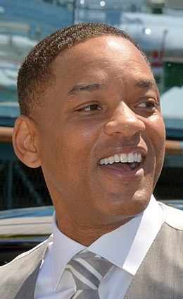

BIOWIKI

WILL SMITH
Métiers: Acteur, Producteur, Producteur délégué Nom de naissance: Willard Christopher Smith Jr. Nationalité Américain Naissance: 25 septembre 1968 (Philadelphie, Pennsylvanie - Etats-Unis) Age 50 ans
Marié à Jada Pinkett depuis 1997. Papa de Jaden Smith et de deux autres enfants. Will Smith se destine à une carrière musicale lorsque, en 1989, il fait la rencontre de Benny Medina, productrice exécutive pour la Warner, qui lui confie le rôle principal de la série télévisée Le Prince de Bel-Air. Un feuilleton qui le rend extrêmement populaire et qui lui permet de débuter une carrière cinématographique. En 1992, il joue dans la comédie Made in America puis se distingue dans le drame Six degrés de séparation. C'est en 1995 que Will Smith explose au niveau international avec son rôle de flic casse-cou et séducteur dans le blockbuster Bad boys. L'année suivante, il confirme son ascension fulgurante en évoluant dans la superproduction Independence day (1996). S'appuyant sur sa gouaille et son talent pour la comédie, l'acteur afro-américain apparaît en tête d'affiche de longs métrages délibérément funs tels que la comédie de science-fiction Men in black ou Wild wild west, adapté de la série télévisée Les Mystères de l'Ouest. Mais Will Smith prouve qu'il est également capable de jouer des rôles plus ambitieux. En témoigne sa présence aux génériques du thriller Ennemi d'Etat (2000) et de La Légende de Bagger Vance (2001), l'un de ses rares échecs au box office. Après son étonnante composition du boxeur Mohammed Ali en 2002, il retrouve ses personnages fétiches d'Agent J dans Men in black 2 et de Mike Lowrey dans le film d'action Bad boys 2 (2003). Très sollicité à Hollywood, il s'impose une nouvelle fois dans un rôle physique de détective pour les besoins du futuriste I, robot (2004), adapté de l'oeuvre d'Isaac Asimov. En 2005, de passage à Paris pour la promotion de Hitch, nouveau carton au box-office, cet "expert en séduction" se voit décerner un César d'honneur : une façon pour le cinéma français de saluer l'ensemble de sa jeune mais prolifique carrière. L'année suivante, la comédie dramatique de Gabriele Muccino, A la recherche du bonheur, lui permet de donner la réplique à son tout jeune fils Jaden Smith. Parcimonieux dans ces choix, on ne retrouve Will Smith que l'année suivante. Il incarne Neville, dernier être humain sain face à une horde de zombies assoiffés de sang, dans adaptation libre du roman culte de Richard Matheson, Je suis une légende. Will Smith incarne ensuite le super-héros Hancock, avant de retrouver Gabriele Muccino en 2008 avec Sept vies. Suite à ce dernier projet et en dépit de son incroyable constance dans le succès public, l'acteur se met considérablement en retrait du monde du cinéma, et ceci pour quelques années. En effet, à partir de 2008, sa carrière ne fonctionne plus que par intermittence. Il ne revient aux affaires dans un premier temps qu'en 2010, officiant en tant que producteur exécutif sur le film Karaté Kid, mettant en vedette une nouvelle fois son fils Jaden Smith. Puis il s'arrête de nouveau, pour produire, deux ans plus tard, Target, réalisé par McG. Un choix de carrière étonnant vu sa formidable popularité, mais sans doute motivé par son envie de retrouver une vie de famille. Son grand retour à l'écran se fait finalement en 2012, dans le classieux costume de l'agent J, pour le troisième opus de la saga Men in Black, toujours réalisé par Barry Sonnenfeld. En 2013, Will Simth plonge dans l'univers du réalisateur M. Night Shyamalan pour le film d'aventure SF After Earth. L'acteur y retrouve pour la seconde fois à l'écran son fils Jaden qui a bien grandi. Malheureusement, le succès n'est pas au rendez-vous. Il se dirige ensuite dans des films un peu plus modestes, à l'image du thriller Diversion dans lequel il côtoie la bombe du Loup de Wall Street Margo Robbie (qu'il retrouve dans le très attendu Suicide Squad en 2016) et Seul contre tous (Concussion) où il se glisse dans la peau du docteur Bennet Omalu, célèbre pour avoir diagnostiqué l’encéphalopathie traumatique chronique chez un joueur de football américain.